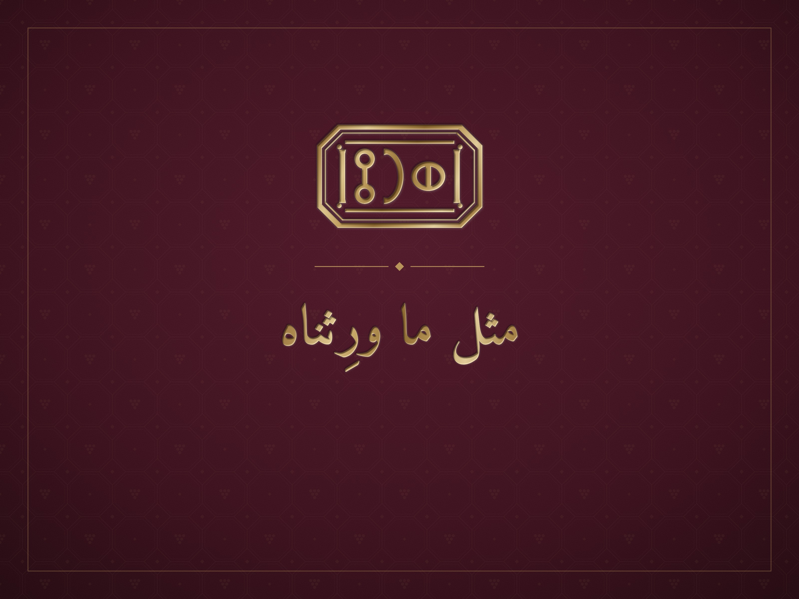

دليل هوية إرث · الإصدار الأول
جمادى الأولى ١٤٤٨هـأكتوبر ٢٠٢٦م
إعداد وتصميم: م/ أحمد درهم حسين الفقيه — الشريك المؤسس ومدير المشروع
لصاحبها الشيخ أحمد علي مفتاح
بني حشيش، صنعاء، اليمن
© ٢٠٢٦ إرث. جميع الحقوق محفوظة. لا يُنسخ شيء من هذا الدليل ولا يُستعمل إلا بإذن مكتوب من أمين العلامة.
IRTH · 1.0